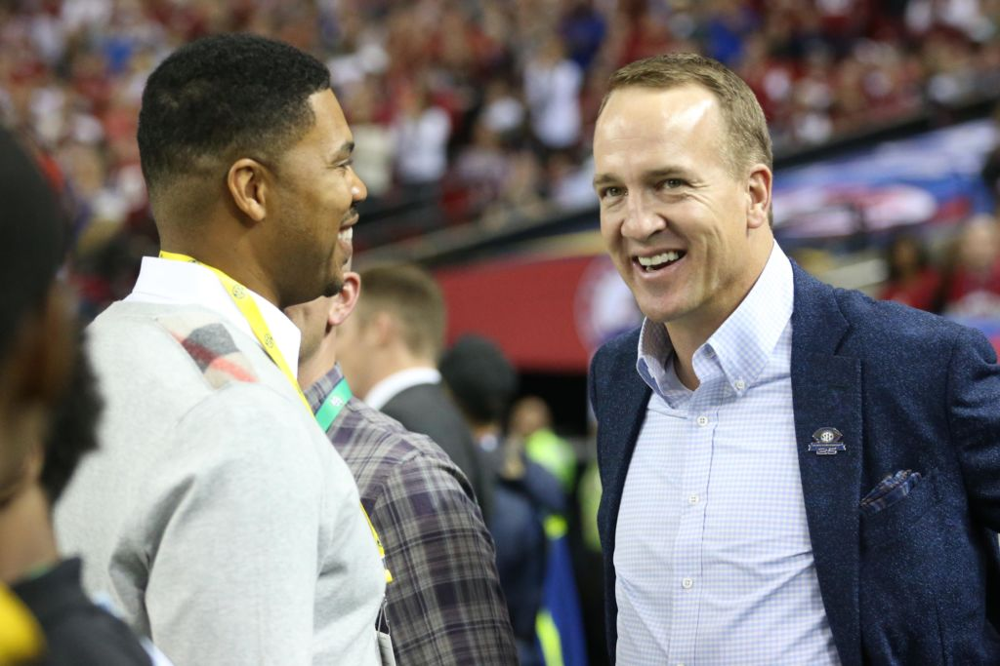
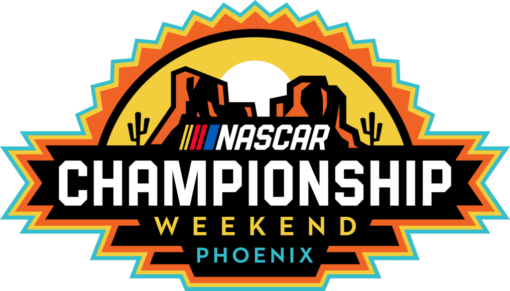
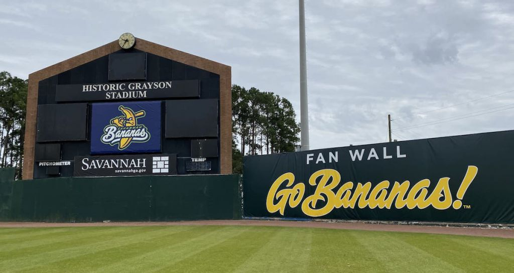
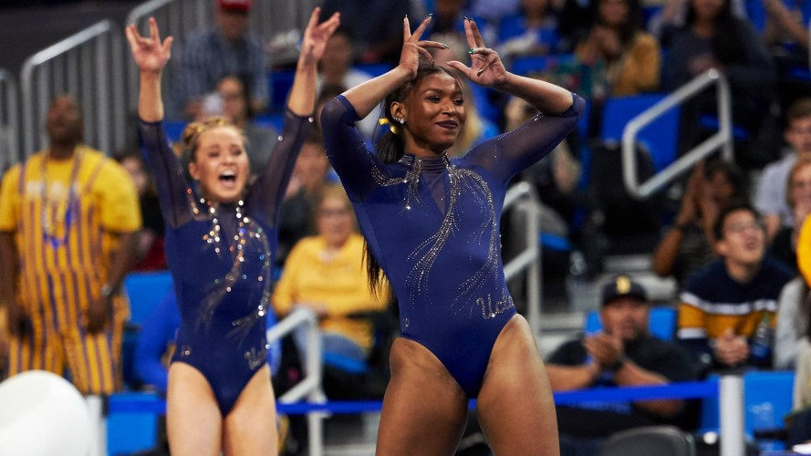

ESPN Considering $20 Million Offer To Peyton Manning For Monday Night
Football

Tony Romo could have the shortest reign ever as the highest-paid sports TV analyst in history.
ESPN is preparing to offer Peyton Manning a record $18 million to $20 million a year to serve as lead analyst for “Monday Night Football,” sources tell Front Office Sports.
If so, that would eclipse Romo’s new multi-year contract from CBS Sports that will pay him $17 million annually.
The 43-year old Manning met with ESPN executives over the last few days, sources said. The two-time Super Bowl winner with the Denver Broncos and Indianapolis Colts has an existing business relationship with ESPN, hosting the 30-episode “Peyton’s Places” documentary series on ESPN+.
ESPN declined to comment.
ESPN pays the NFL $1.9 billion a year for the rights to air MNF- more than double the $950 million paid by NBC for the higher-rated “Sunday Night Football.”
Despite the hefty price tag, ESPN’s all-out pursuit of Manning could make business sense.
ESPN will be the first network to negotiate its TV deal with the league. The network’s MNF contract is up after the 2021 season. NBC’s SNF deal runs through the 2022 season, as do CBS and Fox’s respective Sunday afternoon game packages.
The network’s MNF booth of Booger McFarland and Joe Tessitore was viewed by many as the weakest TV team last season, behind Romo and Jim Nantz at CBS, Cris Collinsworth and Al Michaels at NBC and Troy Aikman and Joe Buck at Fox.
During his 17-year career, Manning won two Super Bowls and five MVP awards. He also remains one of the league’s most popular players, with a 79 percent favorability rating among fans, according to a Morning Consult poll.
Manning is viewed by many as a natural for the TV booth and a good fit to announce today’s pass-happy NFL. He has been featured in numerous national advertising campaigns as well as hosted “Saturday Night Live.”
NASCAR Drops Title Sponsors From Crown Jewel Events

NASCAR and Phoenix Raceway have jointly announced a new race logo and branding strategy for its championship race this season, the first step in NASCAR’s long-term plan to regionalize the marketing and promotional strategy behind the championship race.
With the league’s season finale taking place at Phoenix Raceway for the first time in the track’s history, there will no longer be an entitlement sponsor. Previously known as the Bluegreen Vacations 500, the race will now be called the “NASCAR Championship Race – Phoenix.”
The Championship Race in Phoenix on November 8 will be one of NASCAR’s three “crown jewel” events in 2020 that will not have any entitlement sponsors. The other two are the All-Star Race at Charlotte Motor Speedway on May 16 and the Daytona 500, which took place on February 16.
In recent years, NASCAR has begun focusing on creating a unique, region-specific strategy for its championship race that can be flexible for different markets should it decide to move the event to other markets in the future.
“It was almost three years ago when we kind of went through a full-brand refresh,” Peter Jung, NASCAR’s senior vice president of marketing, told Front Office Sports. “That started with getting grounded in the essence of the NASCAR brand and really – what is our brand book?”
The new look is also meant for NASCAR to create a more specific aura around its championship weekend to make it stand out from other events.
NASCAR’s decision to host the 2020 championship race without a sponsor has been a few years in the making, Jung said. The league has evolved significantly in its 72-year history, and along the way, seen numerous changes to its IP, identity, logos, and designs, Jung added.
With NASCAR’s long history, there was never any shortage of logos. To Jung, an abundance was brought into existence without many major purposes.
For several decades, NASCAR had a traditional partnership strategy which included title sponsors. Monster Energy was most recently the entitlement sponsor for NASCAR’s premier series, but is now only known as the Cup Series. Now, the league looked to 2020 to be a new chapter within the Cup Series and its four premier partners: Busch Beer, Coca-Cola, Geico, and Xfinity.
“This is a very different approach for NASCAR,” Jung said. “But what we wanted to do was celebrate and take the opportunity of this championship race that’s been held for years in Miami across the country to Phoenix. It’s to a fully transformed track-and-field experience in a city that’s completely embracing NASCAR and the championship weekend, and probably one of our most progressive tracks in terms of technology and the fan experience.”
Savannah Bananas Drop Sponsorships and Put Faith in Fan Experience

The Savannah Bananas are dropping sponsors in an effort to make more money.
The collegiate summer wood bat league team made the announcement last week with no immediate plans to recoup the 10- 20% revenue loss caused by dropping advertisers, but team management is optimistic about the future.
“I don’t think we have the answer today, but we don’t have to make up hundreds of thousands of dollars today,” Savannah Bananas President Jared Orton said. “On a short-term level? No. What it will allow us to do in the long term is challenging us to create revenue opportunities solely based on building more fans, creating more experience and serving more people in the way we want to serve them.”
The unorthodox approach to sports business is head scratching to Jim Kahler, executive director of the AECOM Center for Sports Administration at Ohio University. Kahler said there are studies that show people expect ads when they go to sporting events, and find them part of the entertainment mix and ambiance.
“They’re not following best practices,” Kahler said. “Who’s going to follow that train? Nobody.”
In a small market in Georgia, the sports sponsorship model of either selling more real estate or selling the same real estate for more made Bananas management feel like the Yellow Pages, Orton said. That methodology made the ownership group, Fans First Entertainment, feel like they were jeopardizing the ballpark experience.
Now, without sponsorships, the outfield walls will be green and fans won’t see digital board advertisers or even ads on social media or the website. The result is an aesthetic not unlike Augusta National Golf Course- 120 miles to the north- but with a slightly rowdier summer baseball crowd.
“We’re able to serve the fans strictly Bananas content,” Orton said. “Fans don’t come to a game to hear that. They don’t follow on social for that salesmanship.”
The ballpark experience, however, doesn’t seem to be suffering after 88 straight sellouts at Grayson Stadium, with an average of 4,173 fans per game. Last season, the Bananas led the Coastal Plains League in attendance with 117,729 fans- more than twice as many as the second-place Macon Bacons. A built-in fan base helps: prior to 2017, Grayson was home to the Savannah Sand Gnats, a Single-A affiliate of the New York Mets.
While Orton said the initial conversations with sponsors were awkward, they ultimately have all kept their ticket and hospitality packages. Rather than expecting those clients to spend an additional $10,000 to $20,000 on sponsorship packages and advertising, Orton said they’ll look to build out a business helping other businesses connect with customers.
UCLA Gymnastics Lands Another Viral Hit With Performance and Packaging

Tony Romo could have the shortest reign ever as the highest-paid sports TV analyst in history.
ESPN is preparing to offer Peyton Manning a record $18 million to $20 million a year to serve as lead analyst for “Monday Night Football,” sources tell Front Office Sports.
If so, that would eclipse Romo’s new multi-year contract from CBS Sports that will pay him $17 million annually.
The 43-year old Manning met with ESPN executives over the last few days, sources said. The two-time Super Bowl winner with the Denver Broncos and Indianapolis Colts has an existing business relationship with ESPN, hosting the 30-episode “Peyton’s Places” documentary series on ESPN+.
ESPN declined to comment.
ESPN pays the NFL $1.9 billion a year for the rights to air MNF- more than double the $950 million paid by NBC for the higher-rated “Sunday Night Football.”
Despite the hefty price tag, ESPN’s all-out pursuit of Manning could make business sense.
ESPN will be the first network to negotiate its TV deal with the league. The network’s MNF contract is up after the 2021 season. NBC’s SNF deal runs through the 2022 season, as do CBS and Fox’s respective Sunday afternoon game packages.
The network’s MNF booth of Booger McFarland and Joe Tessitore was viewed by many as the weakest TV team last season, behind Romo and Jim Nantz at CBS, Cris Collinsworth and Al Michaels at NBC and Troy Aikman and Joe Buck at Fox.
During his 17-year career, Manning won two Super Bowls and five MVP awards. He also remains one of the league’s most popular players, with a 79 percent favorability rating among fans, according to a Morning Consult poll.
Manning is viewed by many as a natural for the TV booth and a good fit to announce today’s pass-happy NFL. He has been featured in numerous national advertising campaigns as well as hosted “Saturday Night Live.”